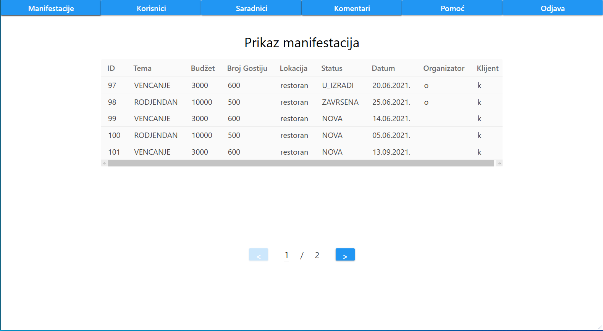
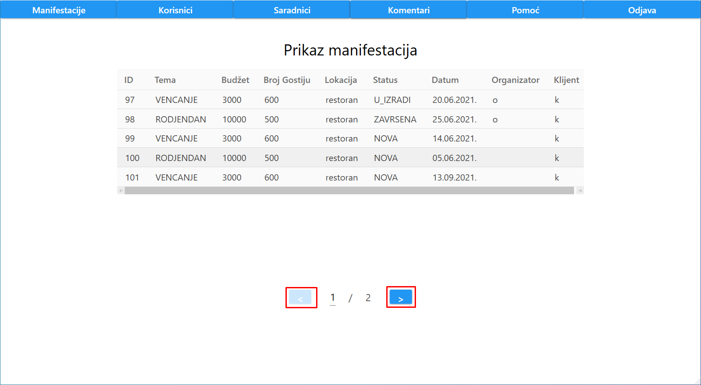

Nakon prijave admina ili klika na dugme "Manifestacija", korisniku se prikazuje lista svih manifestacija.
Prikaz manifestacije je odrađen tabelarno, gde je za svaku manifestaciju ispisan njen ID , tema, budžet, broj gostiju, lokacija, status , datum, korisničko ime organizatora (ukoliko je status manifestacije U_IZRADI ili ZAVRSENA) i korisničko ime klijenta."
Takođe, urađena je paginacija manifestacija tako da se na jednoj stranici nalazi najvise 5 manifestacija.
Ukoliko admin želi da predje na narednu ili prethodnu stranicu, to mu je omogućeno klikom na dugme ">", odnosno "<"-
